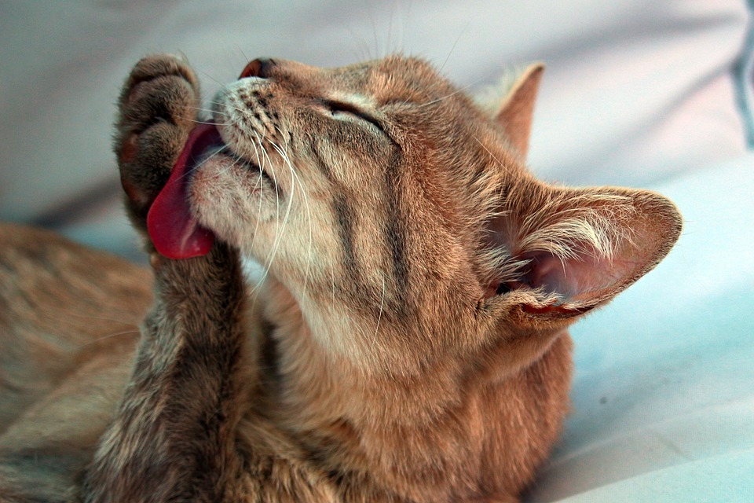
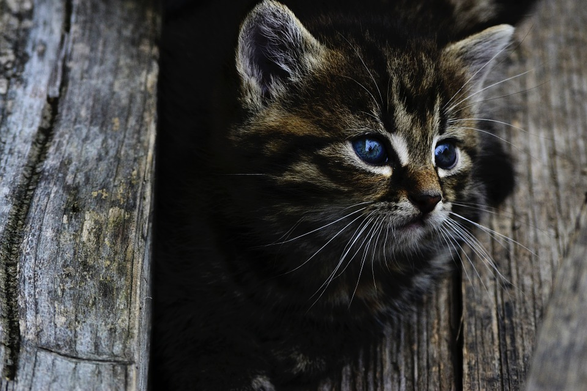

“Way down deep, we’re all motivated by the same urges. Cats have the courage to live by them.”
Cats are awesome
Every household should have one!
This is a placeholder for an image
Some information about cats

Cats often purr when being pet, enjoying the sunshine or sitting on your laptop computer as you try to work.

Grooming helps cats stay tidy, but their saliva also helps insulate their bodies and keep them warm. So, you may see your cat grooming more in cold weather.

Cats generally like high places and are excellent climbers. This behavior is genetic since cats are natural predators!
Call to action! It's time!
Sign up for the newsletter by clickin on the right button!